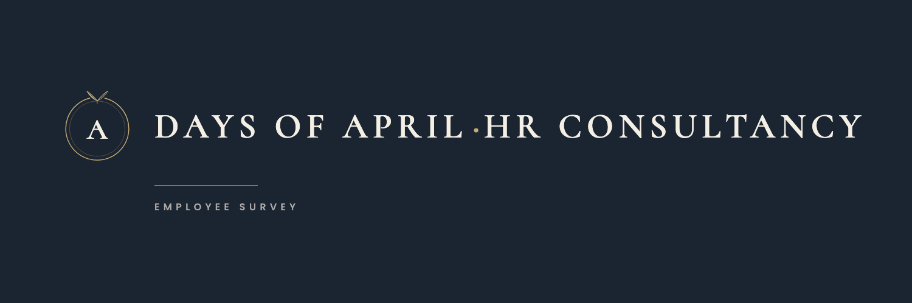

How day-to-day management works for you
Days of April is an independent HR consultancy. Your company's managers are taking part in a training programme, and this short survey helps make it useful: it asks how day-to-day management works for you now, and the same questions will be asked again after the programme to see what improved. It is anonymous. We do not collect your name, and nobody at your company sees individual answers, only overall patterns. Please answer as things really are. It takes about seven minutes.
Your answers are anonymous. We do not collect names or email addresses. Where fewer than five people answer about the same manager, those answers are combined with others so no one can be identified. Results reach your company only as overall patterns, never as individual replies.

Thank you.
Your answers join everyone else's as one overall picture. The same questions will come back to you after the training, and the difference between the two is how your company will know the programme worked. Nothing here is traced back to you.
Days of April